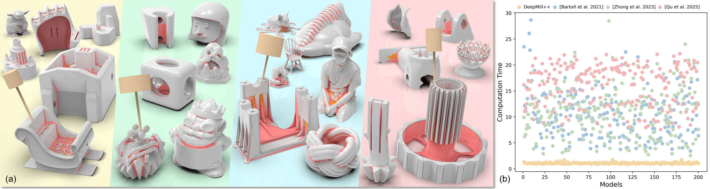
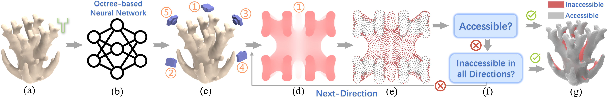
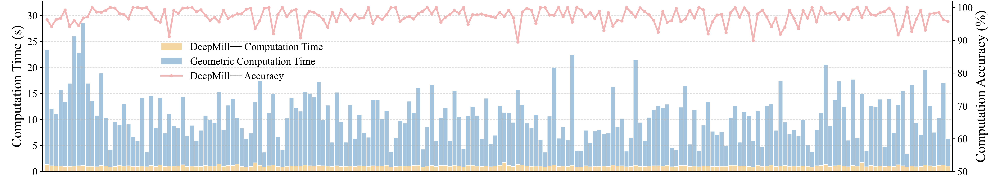
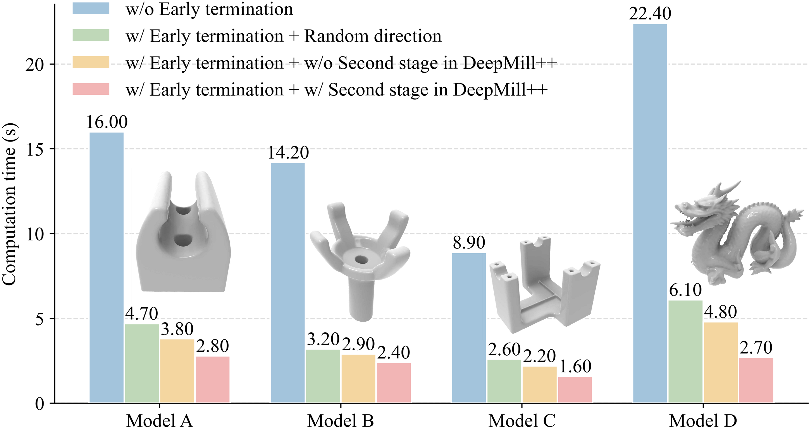

DeepMill++: Neural Guidance Meets Rasterization for Efficient Accessibility Analysis
SIGGRAPH 2026

Fig. 1. We propose DeepMill++, a novel neural–rasterization hybrid framework for fast cutter accessibility analysis of complex geometries. (a) Four colored regions correspond to different cutter sizes and cover both uniform and non-uniform meshes. Compared with existing end-to-end neural approaches, DeepMill++ avoids dangerous non-conservative errors that misclassify inaccessible regions as accessible and exhibits strong generalization. (b) Compared with geometric methods, DeepMill++ achieves an average 9.5× speedup over current state-of-the-art approaches.
Abstract
Manufacturability is crucial for reliable product design, with cutter accessibility being a fundamental constraint in subtractive manufacturing. Traditional geometric methods are accurate but computationally expensive, while learning-based approaches often lack conservativeness and generalization, leading to unsafe predictions. In this paper, we introduce DeepMill++, a conservative and highly efficient framework for cutter accessibility analysis on arbitrary triangular meshes. Instead of relying on neural networks as end-to-end predictors, DeepMill++ reformulates accessibility and occlusion detection as a rasterization-based visibility and depth pooling problem, enabling fast and controllable geometric verification on the GPU. A neural network is used only to guide the evaluation order of cutter directions and vertices, significantly reducing redundant computations while preserving strict conservativeness. Experiments show that DeepMill++ achieves up to 9.5× speedup over state-of-the-art geometric methods under matched accuracy, while maintaining 97.5% conservative accessibility accuracy. For meshes up to 125K triangles, full analysis completes in 2.9 seconds, enabling interactive design and large-scale path planning. The method supports general mesh types and diverse cutter sizes without category assumptions.
Video
DeepMill++

Fig. 2. Pipeline of DeepMill++. (a~c): Given a 3D shape and cutter parameters, a neural network first predicts an ordered sequence of cutter directions and mesh vertices. (d,e): For the currently selected direction, rasterization is performed to generate a depth map, and mesh vertices are evaluated sequentially via pooling to determine accessibility. (f,g): If a vertex is found to be accessible, it is immediately labeled as accessible without further evaluation; otherwise, it is tested under the next direction. A vertex is labeled as inaccessible only if it is determined to be inaccessible under all sampled cutter directions.
Results

Fig. 3. The four subfigures correspond to four different cutter sizes. The two left subfigures use uniform meshes as input, while the two right subfigures use non-uniform meshes. Red regions indicate correctly predicted inaccessible areas, and orange regions denote conservative false positives of DeepMill++, where actually accessible regions are classified as inaccessible. Each subfigure includes a model visualized with its triangular mesh.

Fig. 4. Computation time comparison and accuracy statistics between DeepMill++ and geometric method. The X-axis shows 200 meshes randomly sampled from the ABC dataset. Bars indicate runtimes of DeepMill++ and the geometric method, and the curve shows the accuracy of DeepMill++.

Fig. 5. Ablation of the acceleration strategies. The figure reports computation times for four models under four strategies.